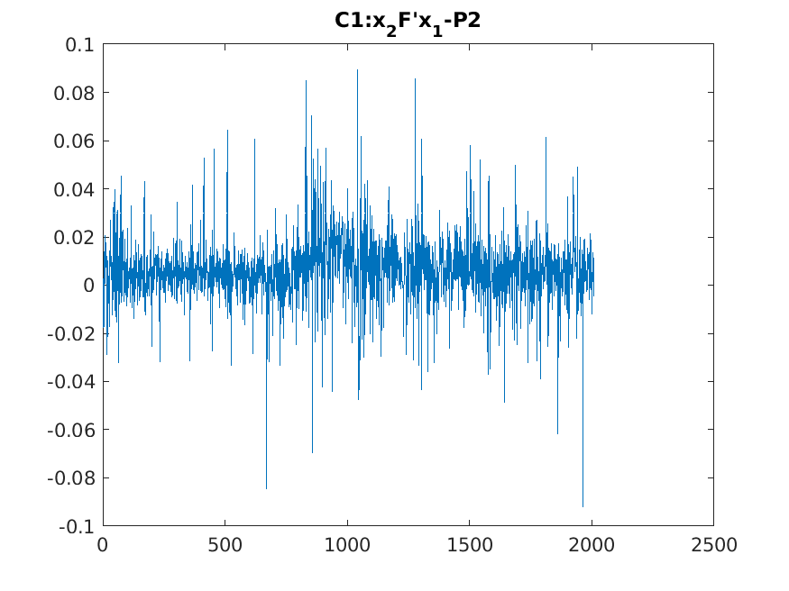
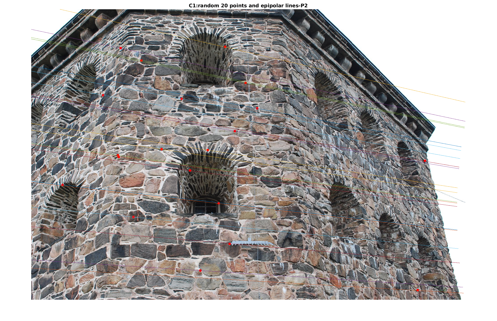
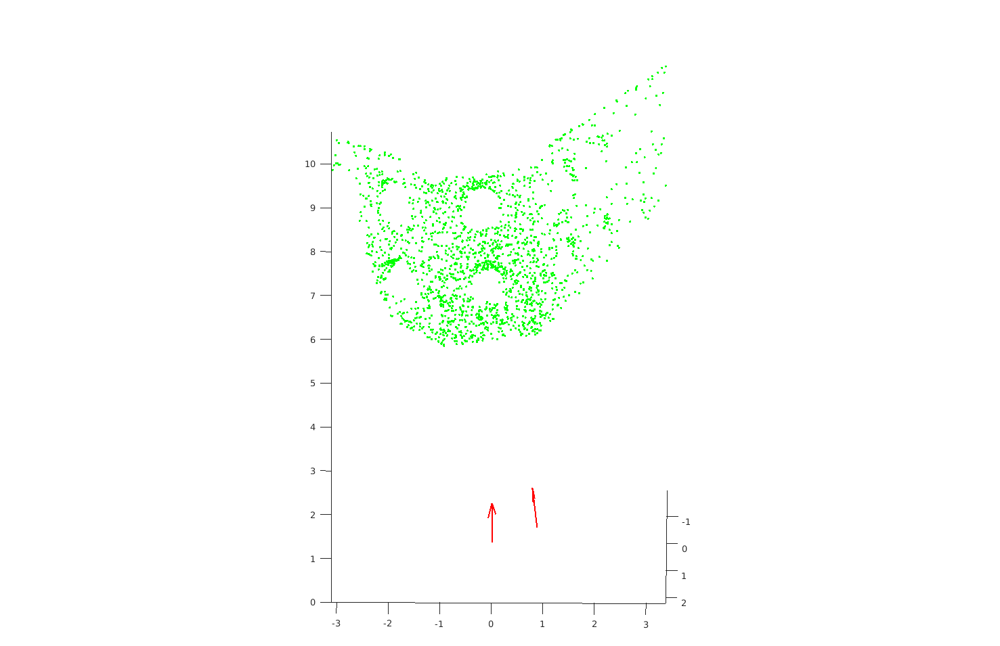

Assignment 2
2023-12-3
Honggang Chen, CID: chenhon
The Fundamental Matrix
Theoratical exercise 1
F = [ t ] x A = ( 0 0 2 0 0 − 2 − 2 2 0 ) ( 1 1 0 0 1 0 0 0 1 ) = ( 0 0 2 0 0 − 2 − 2 0 0 ) F= [t]_xA =
\begin{pmatrix}
0 & 0 & 2 \\
0 & 0 & -2 \\
-2 & 2 & 0
\end{pmatrix}
\begin{pmatrix}
1 & 1 & 0 \\
0 & 1 & 0 \\
0 & 0 & 1
\end{pmatrix}
=
\begin{pmatrix}
0 & 0 & 2 \\
0 & 0 & -2 \\
-2 & 0 & 0
\end{pmatrix}
F = [ t ] x A = 0 0 − 2 0 0 2 2 − 2 0 1 0 0 1 1 0 0 0 1 = 0 0 − 2 0 0 0 2 − 2 0
l 2 = F ( x T 1 ) = ( 2 , − 2 , 0 ) T l_2 = F \begin{pmatrix} x^T \\ 1 \end{pmatrix} = (2,-2,0)^T
l 2 = F ( x T 1 ) = ( 2 , − 2 , 0 ) T
(3)P 2 P_2 P 2 y T F x = 0 y^TFx=0 y T F x = 0
Theoratical exercise 2
We can get P 2 P_2 P 2 C 2 C_2 C 2
C 2 = − P 2 3 , 3 − 1 ∗ P 2 4 = ( 1 , − 2 , 0 ) T C_2 = -P_{2_{3,3}}^{-1}*P_{2_4} = (1,-2,0)^T
C 2 = − P 2 3 , 3 − 1 ∗ P 2 4 = ( 1 , − 2 , 0 ) T
Thus epipoles e 1 e_1 e 1
e 1 = P 1 ( C 2 1 ) = ( I ∣ 0 ) ( C 2 1 ) = C 2 = ( 1 , − 2 , 0 ) T e_1 = P_1 \begin{pmatrix} C_2 \\ 1 \end{pmatrix} = (I|0)
\begin{pmatrix} C_2 \\ 1 \end{pmatrix} = C_2 = (1,-2,0)^T
e 1 = P 1 ( C 2 1 ) = ( I ∣0 ) ( C 2 1 ) = C 2 = ( 1 , − 2 , 0 ) T
And C 1 = 0 C_1= 0 C 1 = 0
e 2 = P 2 ( C 1 1 ) = P 2 4 = ( 2 , 1 , 0 ) T e_2 = P_2 \begin{pmatrix} C_1 \\ 1 \end{pmatrix} = P_{2_4} = (2,1,0)^T
e 2 = P 2 ( C 1 1 ) = P 2 4 = ( 2 , 1 , 0 ) T
F = [ t ] x A = [ P 2 4 ] x P 2 3 , 3 = ( 0 0 1 0 0 − 2 − 1 2 0 ) ( 0 1 1 3 2 0 0 0 3 ) = ( 0 0 3 0 0 − 6 6 3 − 1 ) F= [t]_xA= [P_{2_4}]_xP_{2_{3,3}} = \\
\begin{pmatrix}
0 & 0 & 1 \\
0 & 0 & -2 \\
-1 & 2 & 0
\end{pmatrix}
\begin{pmatrix}
0 & 1 & 1 \\
3 & 2 & 0 \\
0 & 0 & 3
\end{pmatrix}
=
\begin{pmatrix}
0 & 0 & 3 \\
0 & 0 & -6 \\
6 & 3 & -1
\end{pmatrix}
F = [ t ] x A = [ P 2 4 ] x P 2 3 , 3 = 0 0 − 1 0 0 2 1 − 2 0 0 3 0 1 2 0 1 0 3 = 0 0 6 0 0 3 3 − 6 − 1
verify e 2 T F = 0 e_2^TF=0 e 2 T F = 0
e 2 T F = ( 2 , 1 , 0 ) ( 0 0 3 0 0 − 6 6 3 − 1 ) = ( 0 , 0 , 0 ) e_2^TF = (2,1,0) \begin{pmatrix}
0 & 0 & 3 \\
0 & 0 & -6 \\
6 & 3 & -1
\end{pmatrix}
= (0, 0, 0)
e 2 T F = ( 2 , 1 , 0 ) 0 0 6 0 0 3 3 − 6 − 1 = ( 0 , 0 , 0 )
verify F e 1 = 0 Fe_1=0 F e 1 = 0
F e 1 = ( 0 0 3 0 0 − 6 6 3 − 1 ) ( 1 , − 2 , 0 ) T = ( 0 , 0 , 0 ) T Fe_1 =\begin{pmatrix}
0 & 0 & 3 \\
0 & 0 & -6 \\
6 & 3 & -1
\end{pmatrix} (1,-2,0)^T
= (0, 0, 0)^T
F e 1 = 0 0 6 0 0 3 3 − 6 − 1 ( 1 , − 2 , 0 ) T = ( 0 , 0 , 0 ) T
Theoratical exercise 3（optional）
Because
P 2 ( C 2 T ∣ 1 ) T = ( A ∣ t ) ( C 2 T ∣ 1 ) T = 0 P_2 (C_2^T|1)^T = (A|t)(C_2^T|1)^T = 0
P 2 ( C 2 T ∣1 ) T = ( A ∣ t ) ( C 2 T ∣1 ) T = 0
Thus
C 2 = − A − 1 t C_2 = -A^{-1}t
C 2 = − A − 1 t
Thus
e 1 ∼ P 1 ( C 2 T ∣ 1 ) T = ( I ∣ 0 ) ( C 2 T ∣ 1 ) T = C 2 = − A − 1 t e_1 \sim P_1 (C_2^T|1)^T = (I|0)(C_2^T|1)^T = C_2 = -A^{-1}t
e 1 ∼ P 1 ( C 2 T ∣1 ) T = ( I ∣0 ) ( C 2 T ∣1 ) T = C 2 = − A − 1 t
And because C 1 = 0 C_1 = 0 C 1 = 0
e 2 ∼ P 2 ( 0 T ∣ 1 ) T = ( A ∣ t ) ( 0 T ∣ 1 ) T = t e_2 \sim P_2 (0^T|1)^T = (A|t)(0^T|1)^T = t
e 2 ∼ P 2 ( 0 T ∣1 ) T = ( A ∣ t ) ( 0 T ∣1 ) T = t
Because
F T e 2 = ( [ t ] x A ) T e 2 = A T [ t ] x T e 2 = − A T [ t ] x e 2 = − A T [ e 2 ] x e 2 = − A T ( [ e 2 ] x e 2 ) = − A T ( e 2 × e 2 ) = − A T ( 0 ) = 0 \begin{align}
F^Te_2 &= ([t]_xA)^Te_2 = A^T[t]_x^Te_2 \\
&= -A^T[t]_xe_2= -A^T[e_2]_xe_2 = -A^T([e_2]_xe_2) \\
&= -A^T(e_2 \times e_2) = -A^T (0) = 0
\end{align}
F T e 2 = ([ t ] x A ) T e 2 = A T [ t ] x T e 2 = − A T [ t ] x e 2 = − A T [ e 2 ] x e 2 = − A T ([ e 2 ] x e 2 ) = − A T ( e 2 × e 2 ) = − A T ( 0 ) = 0
Thus:
e 2 T F = ( F T e 2 ) T = 0 e_2^TF = (F^Te_2)^T = 0
e 2 T F = ( F T e 2 ) T = 0
And
F e 1 = [ t ] x A e 1 = [ t ] x A ( − λ A − 1 t ) = [ t ] x A A − 1 t = t × t = 0 Fe_1 = [t]_xAe_1 = [t]_xA (-{\lambda} A^{-1}t) = [t]_xAA^{-1}t = t \times t = 0
F e 1 = [ t ] x A e 1 = [ t ] x A ( − λ A − 1 t ) = [ t ] x A A − 1 t = t × t = 0
If problem F e 1 = 0 Fe_1=0 F e 1 = 0
Theoratical exercise 4
F = N 2 T F ˜ N 1 F = N_2^T\~FN_1
F = N 2 T F ˜ N 1
Computer exercise 1
code run1.m is for this exercise. comment line 15-24 to run for part 1 and part 2.
Part 1
(1) normalization matrices N 1 N_1 N 1 N 2 N_2 N 2
N_1 =
0.0024 0 - 2.0255
0 0.0030 - 2.0046
0 0 1.0000
N_2 =
0.0022 0 - 1.6745
0 0.0029 - 1.9181
0 0 1.0000
normalized F
bF_n =
0.1532 13.3245 - 35.0541
- 16.0833 - 0.7902 184.6120
40.9953 - 186.5937 1.0000
verify x ˜ 2 T F ˜ x ˜ 1 = 0 \~x_2^T\~F\~x_1=0 x ˜ 2 T F ˜ x ˜ 1 = 0
unormalized F F F
F =
- 0.0000 - 0.0000 0.0058
0.0000 0.0000 - 0.0267
- 0.0072 0.0263 1.0000
(3) epiploar lines with points
mean distance: 0.3612
historgram with 100 bins
Part 2
F =
- 0.0000 - 0.0000 0.0058
0.0000 0.0000 - 0.0266
- 0.0072 0.0262 1.0000
(2)x ˜ 2 T F ˜ x ˜ 1 = 0 \~x_2^T\~F\~x_1=0 x ˜ 2 T F ˜ x ˜ 1 = 0


mean distance: 0.4878
historgram with 100 bins
Theoratical exercise 5
let x 1 x_1 x 1 x 2 x_2 x 2 P 1 P_1 P 1 P 2 P_2 P 2
x 1 ∼ P 1 [ X T ∣ 1 ] T = [ I ∣ 0 ] [ X T ∣ 1 ] T = X x_1 \sim P_1 [X^T|1]^T = [I|0][X^T|1]^T = X
x 1 ∼ P 1 [ X T ∣1 ] T = [ I ∣0 ] [ X T ∣1 ] T = X
x 2 ∼ P 2 [ X T ∣ 1 ] T = [ [ e 2 ] x F ∣ e 2 ] [ X T ∣ 1 ] T = [ e 2 ] x F X + e 2 x_2 \sim P_2 [X^T|1]^T = [[e_2]_xF | e_2] [X^T|1]^T =
[e_2]_xFX + e_2
x 2 ∼ P 2 [ X T ∣1 ] T = [[ e 2 ] x F ∣ e 2 ] [ X T ∣1 ] T = [ e 2 ] x FX + e 2
Therefore:
x 2 T F x 1 ∼ ( [ e 2 ] x F X + e 2 ) T F X = ( [ e 2 ] x F X ) T F X + e 2 T F X = − ( F X ) T [ e 2 ] x ( F X ) + ( F T e 2 ) T X \begin{align}
x_2^TFx_1 &\sim ([e_2]_xFX + e_2 )^T FX \\
&= ([e_2]_xFX)^T FX + e_2^TFX \\
&= -(FX)^T[e_2]_x(FX) + (F^Te_2)^TX
\end{align}
x 2 T F x 1 ∼ ([ e 2 ] x FX + e 2 ) T FX = ([ e 2 ] x FX ) T FX + e 2 T FX = − ( FX ) T [ e 2 ] x ( FX ) + ( F T e 2 ) T X
Because F T e 2 = 0 F^Te_2=0 F T e 2 = 0 ( F X ) T [ e 2 ] x ( F X ) = 0 (FX)^T[e_2]_x(FX) = 0 ( FX ) T [ e 2 ] x ( FX ) = 0
x 2 T F x 1 = 0 x_2^TFx_1 = 0
x 2 T F x 1 = 0
The projection of these points will fulfill the epipolar constraints.
Let C 2 C_2 C 2 P 2 P_2 P 2
P 2 ( C 2 μ ) = [ e 2 ] x F C 2 + μ e 2 = 0 P_2 \begin{pmatrix} C_2 \\ \mu \end{pmatrix} = [e_2]_xFC_2 + {\mu}e_2 = 0
P 2 ( C 2 μ ) = [ e 2 ] x F C 2 + μ e 2 = 0
Because e 1 ∼ C 2 e_1 \sim C_2 e 1 ∼ C 2
[ e 2 ] x F C 2 + μ e 2 ∼ [ e 2 ] x F e 1 + μ e 2 = 0 [e_2]_xFC_2 + {\mu}e_2 \sim [e_2]_xFe_1 + {\mu}e_2 = 0
[ e 2 ] x F C 2 + μ e 2 ∼ [ e 2 ] x F e 1 + μ e 2 = 0
Because F e 1 = 0 Fe_1 = 0 F e 1 = 0 μ = 0 \mu=0 μ = 0 P 2 P_2 P 2
( e 1 0 ) \begin{pmatrix}e_1 \\ 0\end{pmatrix}
( e 1 0 )
We can get e 2 e_2 e 2 F T F^T F T F T F^T F T
U ∼ ( 0 2 0 1 0 1 1 4 1 ) ∼ ( 1 0 1 0 1 0 0 0 0 ) U \sim
\begin{pmatrix}
0 & 2 & 0 \\
1 & 0 & 1 \\
1 & 4 & 1
\end{pmatrix} \sim
\begin{pmatrix}
1 & 0 & 1 \\
0 & 1 & 0 \\
0 & 0 & 0
\end{pmatrix}
U ∼ 0 1 1 2 0 4 0 1 1 ∼ 1 0 0 0 1 0 1 0 0
Thus e 2 = ( − 1 , 0 , 1 ) T e_2 = (-1,0,1)^T e 2 = ( − 1 , 0 , 1 ) T e 1 e_1 e 1 e 1 ∈ n u l l ( F ) e_1 \in null(F) e 1 ∈ n u ll ( F ) e 1 = ( − 2 , − 1 , 1 ) T e_1 = (-2,-1,1)^T e 1 = ( − 2 , − 1 , 1 ) T
The Essential Matrix
Theoratical exercise 6 (Optional)
We have:
[ t ] x T [ t ] x = ( U S V T ) T ( U S V ) = V S U T U S V T = V S T S V = V S 2 V T [t]_x^T[t]_x = (USV^T)^T(USV)= VSU^TUSV^T= VS^TSV = VS^2V^T
[ t ] x T [ t ] x = ( U S V T ) T ( U S V ) = V S U T U S V T = V S T S V = V S 2 V T
Therefore the eigenvalues of [ t ] x T [ t ] x [t]_x^T[t]_x [ t ] x T [ t ] x
From the question, we have:
− t × ( t × w ) = − [ t ] x [ t ] x × w = [ t ] x T [ t ] x w = λ w -t \times (t \times w) = - [t]_x [t]_x \times w = [t]_x^T [t]_x w = \lambda w
− t × ( t × w ) = − [ t ] x [ t ] x × w = [ t ] x T [ t ] x w = λ w
Therefore, w w w [ t ] x T [ t ] x [t]_x^T [t]_x [ t ] x T [ t ] x λ \lambda λ
When w = t w=t w = t
[ t ] x T [ t ] x w = [ t ] x T [ t ] x t = − t × ( t × t ) = 0 = λ t , ( λ = 0 ) [t]_x^T[t]_x w = [t]_x^T [t]_x t = -t \times (t \times t) = 0 = \lambda t, (\lambda = 0)
[ t ] x T [ t ] x w = [ t ] x T [ t ] x t = − t × ( t × t ) = 0 = λ t , ( λ = 0 )
Thus, when w = t w = t w = t [ t ] x T [ t ] x [t]_x^T[t]_x [ t ] x T [ t ] x
Similar, when w w w t t t
− t × ( t × w ) = ( − t ⋅ w ) t − ( − t ⋅ t ) w = 0 − ( − ∥ t ∥ 2 ) w = ∥ t ∥ 2 w -t \times (t \times w) = (-t \cdot w) t - (-t \cdot t) w = 0 - (-\|t\|^2) w = \|t\|^2 w
− t × ( t × w ) = ( − t ⋅ w ) t − ( − t ⋅ t ) w = 0 − ( − ∥ t ∥ 2 ) w = ∥ t ∥ 2 w
From (1), we know the eigenvalues of [ t ] x T [ t ] x [t]_x^T[t]_x [ t ] x T [ t ] x [ t ] x [t]_x [ t ] x [ t ] x T [ t ] x − u I = 0 [t]_x^T[t]_x - uI=0 [ t ] x T [ t ] x − u I = 0 t = ( x , y , z ) T t = (x,y,z)^T t = ( x , y , z ) T
∣ [ t ] x T [ t ] x − u I ∣ = d e t ( ( z 2 + y 2 − u − x y − x z − x y z 2 + x 2 − u − z y − x z − z y y 2 + x 2 − u ) ) = u 3 − u ( x 2 + y 2 + z 2 ) = 0 \begin{align}
|[t]_x^T[t]_x - u I| &= det(
\begin{pmatrix}
z^2+y^2 - u & -xy & -xz \\
-xy & z^2+x^2 - u & -zy \\
-xz & -zy & y^2+x^2 - u
\end{pmatrix}) \\
&= u^3 - u(x^2+y^2+z^2) = 0
\end{align}
∣ [ t ] x T [ t ] x − u I ∣ = d e t ( z 2 + y 2 − u − x y − x z − x y z 2 + x 2 − u − zy − x z − zy y 2 + x 2 − u ) = u 3 − u ( x 2 + y 2 + z 2 ) = 0
Thus, the eignvalues are 0 and ∥ t ∥ 2 \|t\|^2 ∥ t ∥ 2 − ∥ t ∥ -\|t\| − ∥ t ∥ ∥ t ∥ \|t\| ∥ t ∥
s v d ( E ) = s v d ( [ t ] x ) R svd(E) = svd([t]_x)R
s v d ( E ) = s v d ([ t ] x ) R
So, the sigular values of E is 0, − ∥ t ∥ -\|t\| − ∥ t ∥ ∥ t ∥ \|t\| ∥ t ∥
Computer exercise 2
code file run2.m is for this exercise.
bE_n =
0.0032 0.3619 - 0.1357
- 0.4507 - 0.0282 0.8808
0.1701 - 0.9176 - 0.0004
(2) x ˜ 2 T E x ˜ 1 = 0 \~x_2^TE\~x_1 = 0 x ˜ 2 T E x ˜ 1 = 0
(3) the fundamental matrix
F=
- 0.0000 - 0.0000 0.0066
0.0000 0.0000 - 0.0303
- 0.0082 0.0299 1.0000
(4) epiploar lines with points
(5) mean distance 2.0838
(6) histogram
The distribution of the histogram about distance in computer exercise 2 is more dispersed than that in computer exercise 1.
computer exercise 2
computer exercise 1
Theoratical exercise 7
U V T = ( − 1 / 2 − 1 / 2 0 − 1 / 2 1 / 2 0 0 0 1 ) ( − 1 0 0 0 0 − 1 0 1 0 ) = ( 1 / 2 0 1 / 2 1 / 2 0 − 1 / 2 0 1 0 ) UV^T=
\begin{pmatrix}
-1/{\sqrt2} & -1/{\sqrt2} & 0 \\
-1/{\sqrt2} & 1/{\sqrt2} & 0 \\
0 & 0 & 1
\end{pmatrix}
\begin{pmatrix}
-1 & 0 & 0 \\
0 & 0 & -1 \\
0 & 1 & 0
\end{pmatrix}
=
\begin{pmatrix}
1/{\sqrt2} & 0 & 1/{\sqrt2} \\
1/{\sqrt2} & 0 & -1/{\sqrt2} \\
0 & 1 & 0 \\
\end{pmatrix}
U V T = − 1/ 2 − 1/ 2 0 − 1/ 2 1/ 2 0 0 0 1 − 1 0 0 0 0 1 0 − 1 0 = 1/ 2 1/ 2 0 0 0 1 1/ 2 − 1/ 2 0
d e t ( U V T ) = ( 1 / 2 ∗ 0 ∗ 0 ) + ( 0 ∗ − 1 / 2 ∗ 0 ) + ( 1 / 2 ∗ 1 / 2 ∗ 1 ) − ( 1 / 2 ∗ 0 ∗ 0 ) − ( 0 ∗ 1 / 2 ∗ 0 ) − ( 1 / 2 ∗ − 1 / 2 ∗ 1 ) = 1 det(UV^T) = (1/{\sqrt2}*0*0) + (0*-1/{\sqrt2}*0)+ (1/{\sqrt2} * 1/{\sqrt2} * 1) \\
- (1/{\sqrt2}*0 *0) - (0*1/{\sqrt2}*0) - (1/{\sqrt2} * -1/{\sqrt2} * 1)
= 1
d e t ( U V T ) = ( 1/ 2 ∗ 0 ∗ 0 ) + ( 0 ∗ − 1/ 2 ∗ 0 ) + ( 1/ 2 ∗ 1/ 2 ∗ 1 ) − ( 1/ 2 ∗ 0 ∗ 0 ) − ( 0 ∗ 1/ 2 ∗ 0 ) − ( 1/ 2 ∗ − 1/ 2 ∗ 1 ) = 1
E = U d i a g ( [ 1 , 1 , 0 ] ) V T = ( − 1 / 2 − 1 / 2 0 − 1 / 2 1 / 2 0 0 0 1 ) ( 1 0 0 0 1 0 0 0 0 ) ( − 1 0 0 0 0 − 1 0 1 0 ) = ( 1 / 2 0 1 / 2 1 / 2 0 − 1 / 2 0 0 0 ) E=Udiag([1,1,0])V^T =
\begin{pmatrix}
-1/{\sqrt2} & -1/{\sqrt2} & 0 \\
-1/{\sqrt2} & 1/{\sqrt2} & 0 \\
0 & 0 & 1
\end{pmatrix}
\begin{pmatrix}
1 & 0 & 0 \\
0 & 1 & 0 \\
0 & 0 & 0
\end{pmatrix}
\begin{pmatrix}
-1 & 0 & 0 \\
0 & 0 & -1 \\
0 & 1 & 0
\end{pmatrix}
=
\begin{pmatrix}
1/{\sqrt2} & 0 & 1/{\sqrt2} \\
1/{\sqrt2} & 0 & -1/{\sqrt2} \\
0 & 0 & 0
\end{pmatrix}
E = U d ia g ([ 1 , 1 , 0 ]) V T = − 1/ 2 − 1/ 2 0 − 1/ 2 1/ 2 0 0 0 1 1 0 0 0 1 0 0 0 0 − 1 0 0 0 0 1 0 − 1 0 = 1/ 2 1/ 2 0 0 0 0 1/ 2 − 1/ 2 0
Becasue
( x 2 T 1 ) T E ( x 1 T 1 ) = ( 1 , − 3 , 1 ) E ( 2 , 0 , 1 ) T = 0 \begin{pmatrix}
x_2^T \\
1
\end{pmatrix}^T
E
\begin{pmatrix}
x_1^T \\
1
\end{pmatrix}
=
(1,-3,1) E (2,0,1)^T = 0
( x 2 T 1 ) T E ( x 1 T 1 ) = ( 1 , − 3 , 1 ) E ( 2 , 0 , 1 ) T = 0
x 1 x_1 x 1 x 2 x_2 x 2
( x 1 T 1 ) ∼ P 1 X = [ I ∣ 0 ] ( X ( 1 : 3 , 1 ) X ( 4 , 1 ) ) = X ( 1 : 3 , 1 ) + 0 ∗ X ( 4 , 1 ) \begin{pmatrix}
x_1^T \\
1
\end{pmatrix}
\sim
P_1 X = [I|0]
\begin{pmatrix}
X_{(1:3,1)} \\
X_{(4,1)}
\end{pmatrix}
=
X_{(1:3,1)} + 0*X_{(4,1)}
( x 1 T 1 ) ∼ P 1 X = [ I ∣0 ] ( X ( 1 : 3 , 1 ) X ( 4 , 1 ) ) = X ( 1 : 3 , 1 ) + 0 ∗ X ( 4 , 1 )
Thus X ( 4 , 1 ) X_{(4,1)} X ( 4 , 1 ) s s s X ∈ X ( s ) X \in X(s) X ∈ X ( s )
From the context, we know:
( x 2 T 1 ) ∼ P 2 X ( s ) = P 2 ( : , 1 : 3 ) ( 2 , 0 , 1 ) T + P 2 ( : , 4 ) s \begin{pmatrix}
x_2^T \\
1
\end{pmatrix}
\sim
P_2X(s) =
P_{2_{(:,1:3)}} (2,0,1)^T + P_{2_{(:,4)}}s
( x 2 T 1 ) ∼ P 2 X ( s ) = P 2 ( : , 1 : 3 ) ( 2 , 0 , 1 ) T + P 2 ( : , 4 ) s
And u 3 = ( 0 , 0 , 1 ) T u_3=(0,0,1)^T u 3 = ( 0 , 0 , 1 ) T P 2 = [ U W V T ∣ u 3 ] P_2=[UWV^T|u_3] P 2 = [ U W V T ∣ u 3 ]
( 1 − 3 1 ) ∼ ( 1 / 2 0 − 1 / 2 − 1 / 2 0 − 1 / 2 0 1 0 ) ( 2 0 1 ) + ( 0 0 1 ) s = ( 1 / 2 − 3 / 2 s ) \begin{pmatrix}
1 \\
-3 \\
1
\end{pmatrix}
\sim
\begin{pmatrix}
1/{\sqrt2} & 0 & -1/{\sqrt2}\\
-1/{\sqrt2} & 0 & -1/{\sqrt2} \\
0 & 1 & 0
\end{pmatrix}
\begin{pmatrix}
2 \\
0 \\
1
\end{pmatrix}
+
\begin{pmatrix}
0 \\
0 \\
1
\end{pmatrix}
s=
\begin{pmatrix}
1/{\sqrt2} \\
-3/{\sqrt2} \\
s
\end{pmatrix}
1 − 3 1 ∼ 1/ 2 − 1/ 2 0 0 0 1 − 1/ 2 − 1/ 2 0 2 0 1 + 0 0 1 s = 1/ 2 − 3/ 2 s
Thus s = 1 / 2 s=1/{\sqrt2} s = 1/ 2
For [ U W V T ∣ − u 3 ] [UWV^T|-u_3] [ U W V T ∣ − u 3 ]
( 1 − 3 1 ) ∼ ( 1 / 2 − 3 / 2 − s ) \begin{pmatrix}
1 \\
-3 \\
1
\end{pmatrix}
\sim
\begin{pmatrix}
1/{\sqrt2} \\
-3/{\sqrt2} \\
-s
\end{pmatrix}
1 − 3 1 ∼ 1/ 2 − 3/ 2 − s
Thus s = − 1 / 2 s=-1/\sqrt2 s = − 1/ 2
For [ U W T V T ∣ u 3 ] [UW^TV^T|u_3] [ U W T V T ∣ u 3 ]
( 1 − 3 1 ) ∼ ( − 1 / 2 0 1 / 2 1 / 2 0 1 / 2 0 1 0 ) ( 2 0 1 ) + ( 0 0 1 ) s = ( − 1 / 2 3 / 2 s ) \begin{pmatrix}
1 \\
-3 \\
1
\end{pmatrix}
\sim
\begin{pmatrix}
-1/{\sqrt2} & 0 & 1/{\sqrt2}\\
1/{\sqrt2} & 0 & 1/{\sqrt2} \\
0 & 1 & 0
\end{pmatrix}
\begin{pmatrix}
2 \\
0 \\
1
\end{pmatrix}
+
\begin{pmatrix}
0 \\
0 \\
1
\end{pmatrix}
s=
\begin{pmatrix}
-1/{\sqrt2} \\
3/{\sqrt2} \\
s
\end{pmatrix}
1 − 3 1 ∼ − 1/ 2 1/ 2 0 0 0 1 1/ 2 1/ 2 0 2 0 1 + 0 0 1 s = − 1/ 2 3/ 2 s
Thus s = − 1 / 2 s = -1/\sqrt2 s = − 1/ 2 P 2 = [ U W T V T ∣ − u 3 ] P_2=[UW^TV^T | -u_3] P 2 = [ U W T V T ∣ − u 3 ] s = 1 / 2 s=1/\sqrt2 s = 1/ 2
P_2
[ U W V T , u 3 ] [UWV^T ,u_3] [ U W V T , u 3 ] [ U W T V T , − u 3 ] [UWTV^T , -u_3] [ U W T V T , − u 3 ] [ U W T V T , u 3 ] [UW^TV^T , u_3] [ U W T V T , u 3 ] [ U W T V T , − u 3 ] [UW^TV^T , -u_3] [ U W T V T , − u 3 ]
s
1 / 2 1/{\sqrt2} 1/ 2 − 1 / 2 -1/{\sqrt2} − 1/ 2 − 1 / 2 -1/{\sqrt2} − 1/ 2 1 / 2 1/{\sqrt2} 1/ 2
X
( 2 2 , 0 , 2 , 1 ) T (2{\sqrt2},0,{\sqrt2},1)^T ( 2 2 , 0 , 2 , 1 ) T ( − 2 2 , 0 , − 2 , 1 ) T (-2{\sqrt2},0,-{\sqrt2},1)^T ( − 2 2 , 0 , − 2 , 1 ) T ( − 2 2 , 0 , − 2 , 1 ) T (-2{\sqrt2},0,-{\sqrt2},1)^T ( − 2 2 , 0 , − 2 , 1 ) T ( 2 2 , 0 , 2 , 1 ) T (2{\sqrt2},0,{\sqrt2},1)^T ( 2 2 , 0 , 2 , 1 ) T
x 1 ∼ P 1 X x_1 \sim P_1X x 1 ∼ P 1 X ( 2 2 , 0 , 2 ) T (2{\sqrt2},0,{\sqrt2})^T ( 2 2 , 0 , 2 ) T ( − 2 2 , 0 , − 2 ) T (-2{\sqrt2},0,-{\sqrt2})^T ( − 2 2 , 0 , − 2 ) T ( − 2 2 , 0 , − 2 ) T (-2{\sqrt2},0,-{\sqrt2})^T ( − 2 2 , 0 , − 2 ) T ( 2 2 , 0 , 2 ) T (2{\sqrt2},0,{\sqrt2})^T ( 2 2 , 0 , 2 ) T
x 2 ∼ P 2 X x_2 \sim P_2X x 2 ∼ P 2 X ( 1 , − 3 , 1 ) T (1,-3,1)^T ( 1 , − 3 , 1 ) T -
-
( − 1 , 3 , − 1 ) T (-1,3,-1)^T ( − 1 , 3 , − 1 ) T
We know that when 3D point X ( s ) X(s) X ( s ) P 2 P_2 P 2
Computer exercise 3
code file run3.m is for this exercise.
(1)
P2 =
0.9944 0.0293 0.1017 - 0.9223
- 0.0311 0.9994 0.0161 - 0.1422
- 0.1011 - 0.0191 0.9947 - 0.3594
(2) project X into image.
error is: 1.1927
The result appears quite reasonable, with the lines maintaining the expected parallel and vertical relationship.
